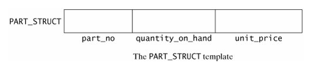
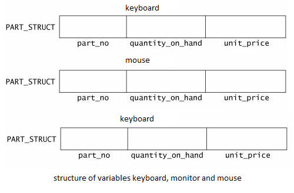
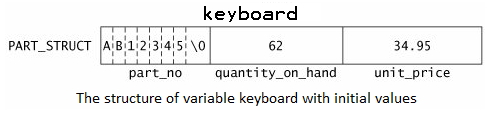

5.1.1 Structure
Arrays allow the programmer to define variables that combine several data items of the same kind. For example, an array of five integers combines five integer values that can be treated as a unit. In this section, we introduce the structure, which allows you to combine data items of different kinds.
5.1.2 Defining Structure
A data structure is a group of data elements grouped together under one name. These data elements, known as members, can have different
types and different lengths. Data structures can be declared in C++ using the following syntax:
struct type_name {
member_type1 member_name1;
member_type2 member_name2;
member_type3 member_name3;
.
.
} <object_names>;
Where type_name is a name for the structure type, object_name can be a set of valid identifiers for objects(optional) that have
the type of this structure. Within braces {}, there is a list with the data members, each one is specified with a type and a valid identifier
as its name.
Suppose we want to process inventory information on parts that are stored in a warehouse. For each part, we would like to store the part number (a sevencharacter code), the quantity on hand (an integer), and the unit price (a double). We could declare a variable for each of these quantities. However, doing so does not reflect that the three variables contain values that are associated with a particular part. We need a single variable in which we can store all three quantities. Most programming languages use a variable called a record for this purpose. In C++, the structurecan provide this capability.
For example:
struct PART_STRUCT
{
string part_no;
int quantity_on_hand;
double unit_price;
} keyboard;
main()
{
PART_STRUCT mouse, monitor;
}Note: the keyboard variable is created as the structure PART_STRUCT is defined, whereas the mouse and monitor variables are created inside the main using the structure PART_STRUCT
Therefore, we can actually define the structure and create all the variables separated by comma after the close curly braces (}) of the struc keyword before ending it with semicolon(;). For example,
struct PART_STRUCT
{
string part_no;
int quantity_on_hand;
double unit_price;
} keyboard, mouse, monitor;
With this keyboard, mouse and monitor are variables, that is of the data type PART_STRUCT. Internally, the variables keyboard, mouse, and monitor has the structure that we define in the struct keyword
The definition begins with the keyword struct. The identifier PART_STRUCT gives a name to the structure. (We place the suffix _struct at the end of a structure name to remind us that the identifier is a structure. This is not required by C++, but is a useful programming practice.) Following the structure name are the structure members enclosed in braces. The structure members are the parts of the structure and they are declared in the same way as ordinary variables although they are not variables. The PART_STRUCT structure has three members. The first member, part_no, is a character array. The second member, quantity_on_hand, is an integer. The third member, unit_price, is a double. Note that the definition of the structure ends in a semicolon.
Note:
It is important to realize that the definition of the PART_STRUCTstructure does not declare a variable. It, therefore, does not reserve any space in computer storage. A structure definition defines a template for the compiler to use when we declare PART_STRUCTvariables. The struct statement actually defines another data type. By itself it does not declare a variable. Also, the part_no,quantity_on_hand , and unit_price members of the structure are merely names for the members of the structure and are not variables.
Figure 1 shows how we can think of the PART_STRUCT structure data type. The PART_STRUCT structure is divided into three pieces consisting of the three members, part_no , quantity_on_hand , and unit_price , in that order.
 Figure 1
To declare a variable that is of the PART_STRUCT type, we can code the following.
PART_STRUCT keyboard, mouse, monitor;
This declaration define the variables, keyboard, mouse, monitor, that is of data type PART_STRUCT. Internally, the variable keyboard, mouse or monitor has the structure that we defined in the struct statement for PART_STRUCT. Figure 2 shows the variables keyboard, mouse and monitor.
 Figure 2
Although the PART_STRUCT data type does not reserve computer storage, the variables keyboard, mouse and monitor does. The variable keyboard, mouse and monitor requires whatever amount of storage is necessary to store an eight-character array, an integer, and a double.
5.1.3 Accessing Structure Members or simply Member
Once the three objects of a determined structure type are declared (keyboard, mouse, and monitor) its members can be
accessed directly. The syntax for that is simply to insert a dot (.), which is what we called a member operator, between the
object name and the member name. The member operator is coded as a period between the structure variable name and the structure member that we wish to
access. For example, we could operate with any of these elements as if they were standard variables of their respective types:
keyboard.part_no
keyboard.quantity_on_hand
keyboard.unit_price
mouse.part_no
mouse.quantity_on_hand
mouse.unit_price
monitor.part_no
monitor.quantity_on_hand
monitor.unit_priceTo assign the value 62, 27 and 13 to the quantity_on_hand members of keyboard, mouse and monitor respectively, we would code the following:
keyboard.quantity_on_hand = 62;
mouse.quantity_on_hand = 27;
monitor.quantity_on_hand = 13;
 Figure 3
Again, read this assignment as "62 is assigned to the quantity_on_hand member of keyboard ", or as " keyboard 's quantity_on_hand becomes 62."
NOTE: Read this reference from right to left as "the quantity_on_hand member of keyboard ". You can also read it as the possessive " keyboard 's quantity_on_hand ."
The following program, dem05-1.cpp, shows how to access the members of a structure.
// example about structures
// Filename: demo05-1.cpp
// This program illustrates the
// declaration and use of structure
// variables and the member operator to // access structure
// variable members.
#include <iostream>
#include <string>
using namespace std;
struct PART_STRUCT
{
string part_no;
int quantity_on_hand;
double unit_price;
} mouse;
int main()
{
PART_STRUCT keyboard;
mouse.part_no = "KB12345";
mouse.quantity_on_hand = 10;
mouse.unit_price =1499.75;
cout << "Enter the seven-character part number: ";
getline(cin,keyboard.part_no);
cout << endl;
cout << "Enter the quantity on hand: ";
cin >> keyboard.quantity_on_hand;
cout << endl;
cout << "Enter the unit price: ";
cin >> keyboard.unit_price;
cout << endl;
cout << "You entered the following information for the variable keyboard of data type PART_STRUCT:" << endl << endl;
cout << "Part Number: " <<
keyboard.part_no << endl;
cout << "Quantity On Hand: "
<< keyboard.quantity_on_hand
<< endl;
cout << "Unit Price: "
<< keyboard.unit_price << endl;
cout << endl;
cout << "You assigned the following information for the variable mouse of data type PART_STRUCT:" << endl << endl;
cout << "Part Number: " <<
mouse.part_no << endl;
cout << "Quantity On Hand: "
<< mouse.quantity_on_hand
<< endl;
cout << "Unit Price: "
<< mouse.unit_price << endl;
return 0;
}
Note: Notice that the keyboard object for the structure PART_STRUCT is created as the structure is define. Unlike the mouse object for the structure PART_STRUCT is created inside the main using the declaration PART_STRUCT mouse;. With this we can create several object
The program begins with the definition of the structure type that we discussed earlier. In main() , we declare the structure variable keyboard . The program asks the user for a part number, quantity on hand, and unit price. When working with structures, it is important to keep the data type of a structure member reference is the same as the data type of the right-most element of that reference.
Thus, keyboard.part_no has the same data type as part_no , which is a string. Thus, any reference to keyboard.part_no should be as the name of a string. Also, keyboard.quantity_on_hand is an integer because quantity_on_hand is an integer.
Because the seven-character part number is a string, the program obtains it by a call to getline(cin,keyboard.part_no) . The getline() function requires the name of a string as its second argument. Thus, the required statement is
getline(cin,keyboard.part_no);
After prompting for, and obtaining, the data entered by the user, we can depict the contents of the structure variable keyboard as shown in Figure 4.
5.1.4 Initializing a Structure Variable
You can initialize a structure variable similarly to the way in which you initialize an array. For example, using the PART_STRUCT data type defined earlier, we can declare and initialize the variable old_part as follows.
PART_STRUCT old_part = {"XY98765", 17, 99.99};
Thus, to initialize a structure variable, enclose in braces a list of the structure member values. Separate the values by commas. You must take care that the types of the values in the list correspond to the data types of the members of the structure. Thus, in our example, the first listed value is a string, the second value is an integer, and the third value is a double.